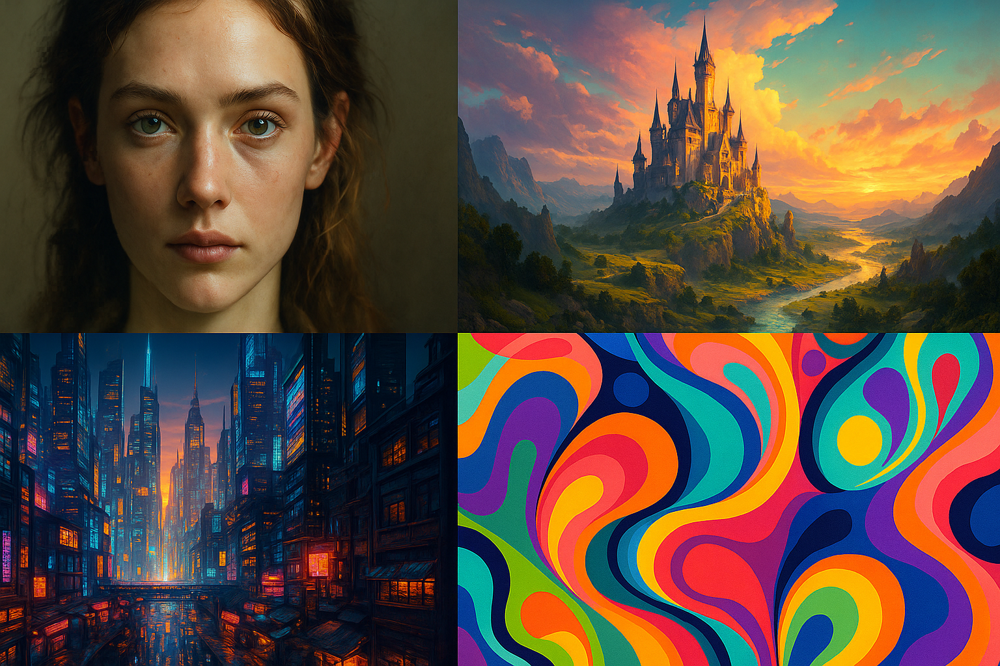

How to Use Midjourney: Beginner's Guide to AI Image Generation (2025)
Last Updated: May 3, 2025
Ever seen those incredibly detailed, artistic, or sometimes bizarre images online and wondered how they were made? Chances are, many were created using AI image generators, and Midjourney is one of the most popular and powerful tools leading this creative revolution. It allows you to turn simple text descriptions (prompts) into unique, high-quality images in a matter of seconds.
But how do you actually use Midjourney? Unlike some other AI tools with web interfaces, Midjourney primarily operates through Discord, a popular chat platform. This might seem unusual at first, but this guide will walk you through everything you need to know as a beginner. We'll cover joining the Discord server, understanding the basic commands, writing your first prompts, and generating your initial images. By the end of this guide, you'll be ready to start creating your own AI art!
Want to master Midjourney? Unlock advanced techniques, explore powerful parameters, and discover expert prompting strategies with our Ultimate Midjourney Guide. Download your FREE comprehensive guide today! [Link to Landing Page Placeholder]
What is Midjourney and Why Discord?
Midjourney is an independent research lab exploring new mediums of thought and expanding the imaginative powers of the human species. Their primary tool is an AI that generates images from textual descriptions, similar to OpenAI's DALL-E or Stable Diffusion. However, Midjourney is particularly renowned for its artistic flair and ability to produce aesthetically pleasing, often painterly or illustrative results.
Why does it use Discord? Initially, using Discord provided a ready-made platform for community interaction, user management, and delivering the bot's functionality without needing to build a complex web interface from scratch. It fosters a collaborative environment where users can see what others are creating, share prompts, and learn from each other. While a web interface is also available for managing your gallery, the core image generation process still happens via Discord commands.
To use Midjourney, you essentially 'talk' to the Midjourney Bot within their Discord server, giving it instructions (prompts) to create images.
Getting Started: Your First Steps with Midjourney
Let's get you set up to create your first image. You'll need a verified Discord account first. If you don't have one, you can create it for free at discord.com.
Step 1: Join the Midjourney Discord Server
- Go to the Midjourney website: https://www.midjourney.com/
- Look for a button like "Join the Beta" or "Sign In".
- You'll be prompted to accept an invite to the Midjourney Discord server. Click "Accept Invite".
- This will open Discord (either the app or in your browser) and add the Midjourney server to your server list on the left.
Step 2: Find a Newcomer Channel
The Midjourney server is huge and bustling! To avoid overwhelming the main channels, they have specific areas for beginners.
- Look at the channel list on the left side of the Discord interface within the Midjourney server.
- Scroll down until you see categories like "NEWCOMER ROOMS" or similar.
- Click on any channel named something like
#newbies-123or#general-image-gen. These are the designated spots to use the bot.
Step 3: Subscribe (Important Note)
Midjourney previously offered a free trial, but due to overwhelming demand, **a paid subscription is now generally required** to generate images. You might get a few free credits initially, but expect to subscribe for continued use.
- In any channel, type
/subscribeand press Enter. - The Midjourney Bot will send you a private link to manage your subscription. Click this link.
- Choose a subscription plan that suits your needs (Basic, Standard, Pro).
- Complete the payment process.
Once subscribed, you're ready to generate!
Generating Your First Image
This is where the magic happens. You interact with the Midjourney Bot using commands, primarily /imagine.
Step 4: Use the /imagine Command
In the message bar of one of the newbie channels:
- Type
/(forward slash). A list of commands will pop up. - Select or type
imagine. You'll see/imagine prompt:appear in your message bar.
Step 5: Write Your Prompt
After /imagine prompt:, type a description of the image you want to create. Be descriptive! Think about:
- Subject: What is the main focus? (e.g., `a cat`, `a futuristic city`, `a bowl of fruit`)
- Action/Setting: What is the subject doing or where is it? (e.g., `sleeping in a sunbeam`, `at sunset`, `on a wooden table`)
- Style: How should it look? (e.g., `photorealistic`, `cartoon style`, `oil painting`, `watercolor`, `cyberpunk`)
- Details: Colors, lighting, mood, specific elements. (e.g., `wearing a tiny hat`, `with dramatic lighting`, `in the style of Van Gogh`)
Example Prompts:
/imagine prompt: a cute robot waving hello, cartoon style/imagine prompt: photorealistic portrait of an astronaut looking at Earth from the moon/imagine prompt: a serene landscape with mountains and a lake at sunrise, oil painting
Once you've typed your prompt, press Enter.
Step 6: Understand the Output (The Grid and Buttons)
The Midjourney Bot will acknowledge your prompt and start working. After a short wait (usually under a minute), it will post a message containing:
- A 2x2 Grid of Images: Four initial options based on your prompt. These are low-resolution previews.
- Two Rows of Buttons Below the Grid:
- U1, U2, U3, U4: These stand for "Upscale". Clicking one of these buttons generates a larger, more detailed version of the corresponding image in the grid (1 is top-left, 2 is top-right, 3 is bottom-left, 4 is bottom-right).
- V1, V2, V3, V4: These stand for "Variation". Clicking one of these creates four new images that are variations of the style and composition of the corresponding image in the grid.
- 🔄 (Reroll): This button runs your original prompt again, giving you a completely new grid of four images.
Experiment by clicking the U and V buttons on the images you like best. Upscaling gives you the final image, while variations help you explore similar ideas.
Step 7: Save Your Image
Once you have upscaled an image (using a U button) that you're happy with:
- Click on the upscaled image to view it larger.
- Right-click on the image.
- Select "Save Image As..." (or similar wording depending on your browser/OS).
- Choose where to save the image on your computer.
Congratulations! You've just created and saved your first AI image with Midjourney.
A Quick Look at Basic Parameters (Optional)
You can add special instructions called "parameters" to the end of your prompt to influence the output. These start with two hyphens (`--`). Here are a couple of basic ones:
- Aspect Ratio (
--ar): Controls the width-to-height ratio. Default is 1:1 (square). Examples:--ar 16:9(widescreen),--ar 2:3(portrait). - Stylize (
--s): Influences how artistic the image is. Higher values mean more artistic interpretation. Default is 100. Example:--s 750.
Example Prompt with Parameters:
/imagine prompt: a majestic castle on a hill at sunset, fantasy art --ar 16:9 --s 250
There are many more parameters, but these are good ones to know as you start experimenting.
Tips for Midjourney Beginners
- Start Simple: Don't try overly complex prompts at first. Build up complexity gradually.
- Use Commas: Separate distinct ideas or keywords in your prompt with commas for clarity.
- Browse the Community Feed: Look at what others are creating on the Midjourney website or in the Discord channels. You can often see the prompts they used, which is a great way to learn.
- Experiment Constantly: Try different keywords, styles, and parameters. Reroll prompts, create variations. The more you experiment, the faster you'll learn.
- Use the Website Gallery: Log in to the Midjourney website (https://www.midjourney.com/app/) to see all the images you've generated in one place, making them easier to find and download.
Common Beginner Issues
- Bot Doesn't Respond: Ensure you typed
/imaginecorrectly and are in a permitted channel (#newbies, #general, or direct message with the bot). Check if the Discord service or Midjourney is experiencing an outage (check their status channel). - Images Not What You Expected: Your prompt might be too vague or conflicting. Try simplifying it or being more specific. Look at successful prompts for similar images.
- Job Queue Full / Long Wait Times: During peak hours, generation can take longer. Be patient, or try again later. Higher subscription tiers often have faster access.
Conclusion: Your Creative Journey Begins
You now have the fundamental knowledge to use Midjourney! You've learned how to join the Discord, subscribe, use the /imagine command, write basic prompts, understand the output grid, and save your creations. Midjourney is an incredibly powerful tool for unleashing creativity, generating unique visuals for projects, or simply having fun exploring the possibilities of AI art.
The key is experimentation. Don't be afraid to try strange prompts, explore different styles, and see what the AI comes up with. Keep practicing, browse the community's work for inspiration, and soon you'll be creating breathtaking images.
Ready to take your skills to the next level? Don't forget to grab our FREE Ultimate Midjourney Guide for advanced prompting techniques, parameter deep-dives, and workflow tips! [Link to Landing Page Placeholder]
Frequently Asked Questions
Yes, currently Midjourney primarily operates through its Discord server. You interact with the Midjourney bot using commands within Discord channels to generate images.
Midjourney used to offer a limited free trial, but due to high demand, it now generally requires a paid subscription for image generation. Check their website for the latest subscription plans and potential trial availability.
Clicking a 'V' button (V1-V4) tells Midjourney to create four new variations based on the style and composition of the selected image from the initial grid. It's useful for exploring similar options.
Clicking a 'U' button (U1-U4) tells Midjourney to upscale the selected image from the grid. This generates a larger, more detailed version of that specific image.
Better prompts are usually more specific. Include details about the subject, style (e.g., 'photorealistic', 'cartoon', 'oil painting'), lighting, composition, and mood. Experimenting with different keywords and parameters is key.
Generally, paid Midjourney subscribers have broad rights to use the images they create, including commercially. However, it's crucial to review Midjourney's official Terms of Service for the most current and specific details regarding image ownership and usage rights.